开发者注册认证
1. 开发者认证流程概览
1、开放平台账号是比亚迪生态开放平台的登录凭证，认证开发者身份前，需先注册开放平台账号；
2、请根据实际情况选择开发者认证类型：企业开发者、个人开发者；
3、企业开发者需填写企业信息、法人身份证号、法人身份证照片等信息进行人工审核。人工审核时间为1~3个工作日。
4、个人开发者需填写姓名、身份证照片、身份证件号、邮箱地址、通讯地址等信息进行人工审核。人工审核时间为1~3个工作日。
2. 认证相关名词解释
2.1开发者账号定义
开发者账号用于在开放平台发布您的产品，由开放平台账号和企业开发者认证/个人开发者认证组成。
开放平台账号： 作为比亚迪生态开放平台的登录凭证，由开放平台账号提供登录服务；
开发者认证： 作为开发者的身份信息认证，由比亚迪生态开放平台提供开发者服务；
开发者账号： 开放平台账号+开发者认证=开发者账号。
2.2 开发者认证权益
平台目前开放范围包含AIoT业务和应用分发业务，开发者认证后的权益范围如下：
| 业务类型 | 是否开放 | 企业开发者 | 个人开发者 |
|---|---|---|---|
| AIoT | 是 | ✔ | ✘ |
| 应用分发 | 是 | ✔ | ✔ |
| 主题商店 | 待开放 | ✔ | ✔ |
表 2-1 各业务开发者认证类型
2.3 认证材料
2.3.1 企业认证
企业创建者需要先完成个人实名认证，再提交企业认证信息，等待人工审核。
| 认证方式 | 所需材料 |
|---|---|
| 人工审核认证 | 材料/信息： 公司名称、企业统一社会信用代码、邮箱地址、通讯地址、营业执照照片、法人姓名、法人身份证人像面、国徽面照片。人工审核时间为1~3个工作日。 |
表 2-2 企业认证所需材料
2.3.2 个人认证
个人认证即个人实名认证。
| 认证方式 | 所需材料 |
|---|---|
| 人工审核认证 | 材料/信息： 姓名、身份证号、邮箱地址、通讯地址、人像面照片、国徽面照片、手持身份证照片。人工审核时间为1~3个工作日。 |
表 2-3 个人认证所需材料
3. 注册开放平台账号
比亚迪生态开放平台使用开放平台账号作为登录凭证，因此，在进行开发者认证之前，您需完成注册开放平台账号。
3.1 注册开放平台账号
登录 比亚迪生态开放平台首页，点击导航栏最右侧注册按钮，按照页面提示操作，或点击这里注册开放平台账号。
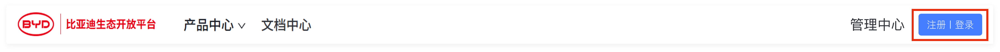
图 3-1 首页导航栏——注册/登录
注册开放平台账号，是通过手机号+短信验证码的方式，注册界面入口如下：
1. 您可以在“密码登录”界面右下角点击“立即注册”，如图 3-2，则自动进入“验证码登录”界面，如图 3-3，再填写手机号和短信验证码后，点击登录按钮，即可完成注册。
2. 您也可以直接进入“验证码登录”界面，如图 3-3，填写手机号和短信验证码后，勾选《比亚迪生态开放平台用户协议》和《比亚迪生态开放平台隐私政策》，点击登录按钮，即可完成注册。
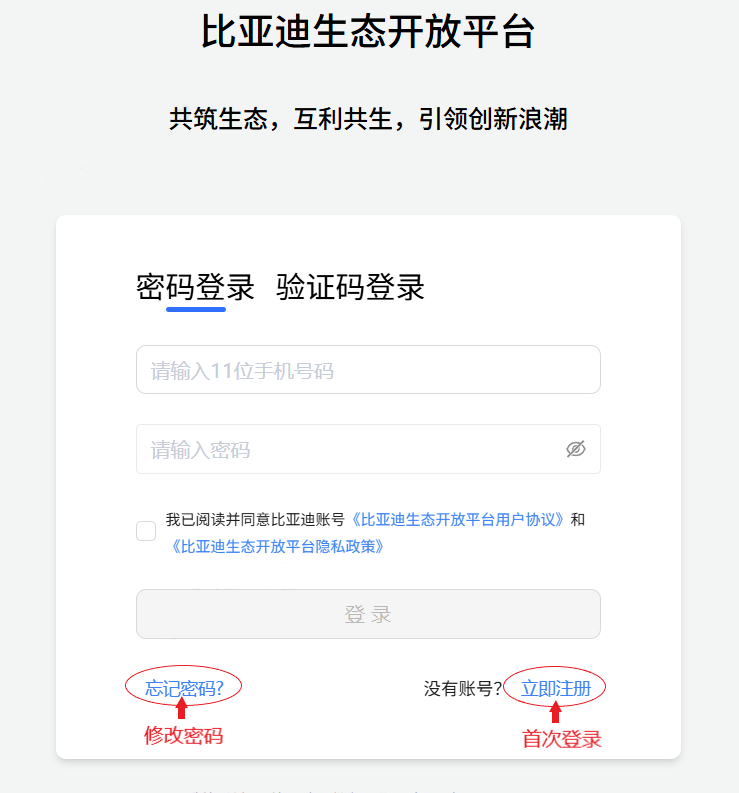
图 3-2 密码登录
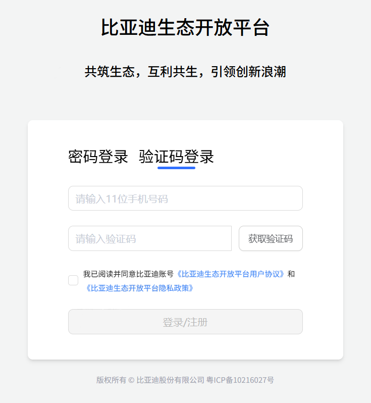
图 3-3 验证码登录
3.2 登录开放平台账号
比亚迪生态开放平台提供两种登录方式：密码登录和验证码登录。
3.2.1 密码登录
1、当您已经注册的开放平台账号，没有设置密码或者忘记密码的情况下，在“密码登录”界面（图 3-2）点击左下角的“忘记密码”，进入“重置密码”界面（图 3-4），在填写“手机号和短信验证码”完成账号验证后，即可设置新密码。2、当您已经设置过密码的情况下，在“密码登录”界面（图 3-2），输入正确的手机号+密码，勾选《比亚迪生态开放平台用户协议》和《比亚迪生态开放平台隐私政策》，即可完成登录。
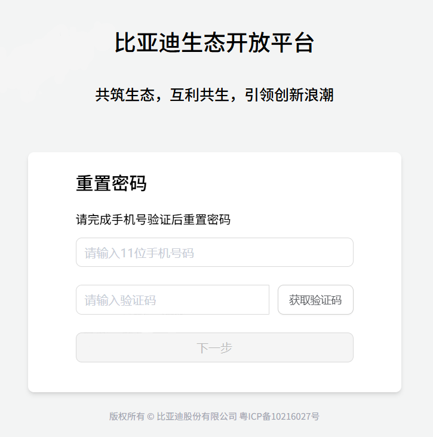
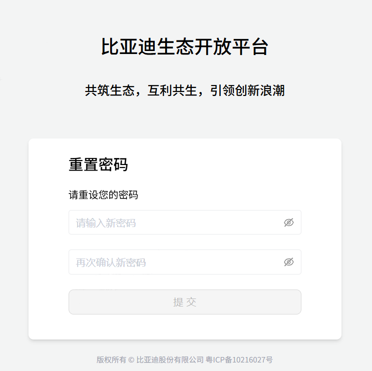
图 3-4 重置密码
3.2.2 验证码登录
进入“验证码登录”界面，如图 3-3，填写手机号和短信验证码后，勾选《比亚迪生态开放平台用户协议》和《比亚迪生态开放平台隐私政策》，点击登录按钮，即可完成登录。
4. 开发者认证
比亚迪生态开放平台开发者认证分为企业开发者认证和个人开发者认证，请根据您的实际情况选择开发者认证类型。
企业开发者认证的前提是完成个人实名认证。
4.1 企业开发者认证
4.1.1 企业开发者角色
比亚迪生态开放平台的认证企业，支持多开发者分角色共同管理企业事务，其中企业开发者的角色如下表：
| 权限\角色 | 超级管理员 | 管理员 | 普通成员 |
|---|---|---|---|
| 业务操作 | ✔ | ✔ | ✔ |
| 添加和修改成员 | ✔ | ✔ | |
| 移交企业 | ✔ | ||
| 退出企业 | ✔ | ✔ |
表 4-1 企业开发者角色
成为比亚迪生态开放平台企业开发者，首先完成个人实名认证，具体请参考下图的途径：
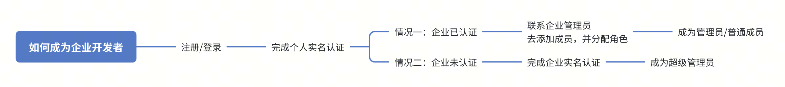
图 4-1 如何成为企业开发者
4.1.2 认证入口
①入口1：若登录后未进行认证，点击管理中心后将直接跳转选择认证类型，进行业务认证。
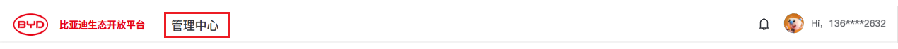
图 4-2 认证入口1
②入口2：鼠标悬停在右上角开发者用户头像位置，显示个人中心菜单，点击下图去认证，进入到认证页面。
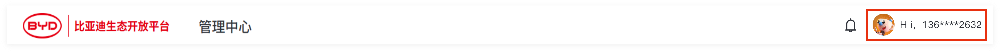
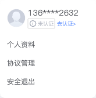
图 4-3 认证入口2
③入口3：已经完成个人实名认证的开发者，如需创建企业，可访问路径：「个人中心-企业信息-创建企业」，如下图 4-4。
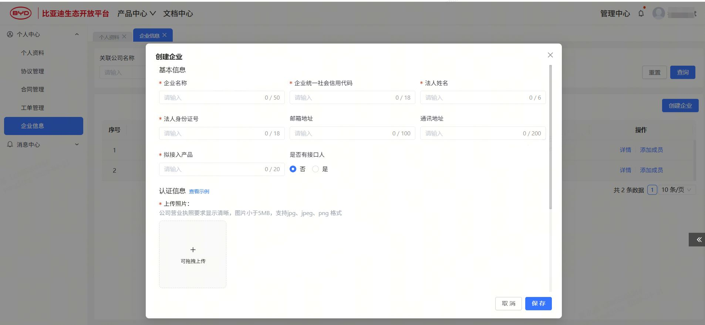
图 4-4 认证入口3
4.1.3 选择认证类型
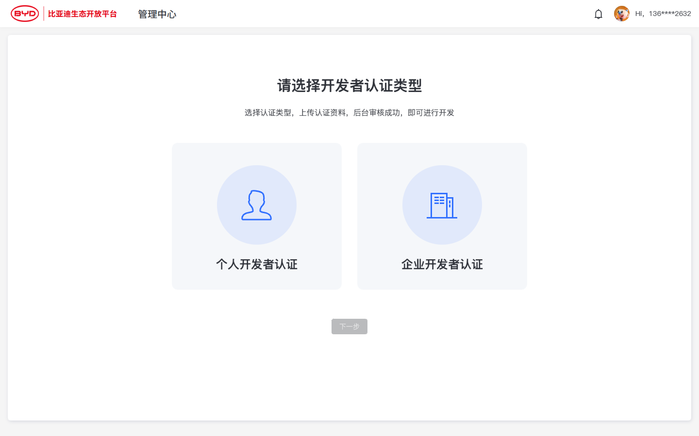
图 4-5 选择认证类型
4.1.4 提交企业认证信息
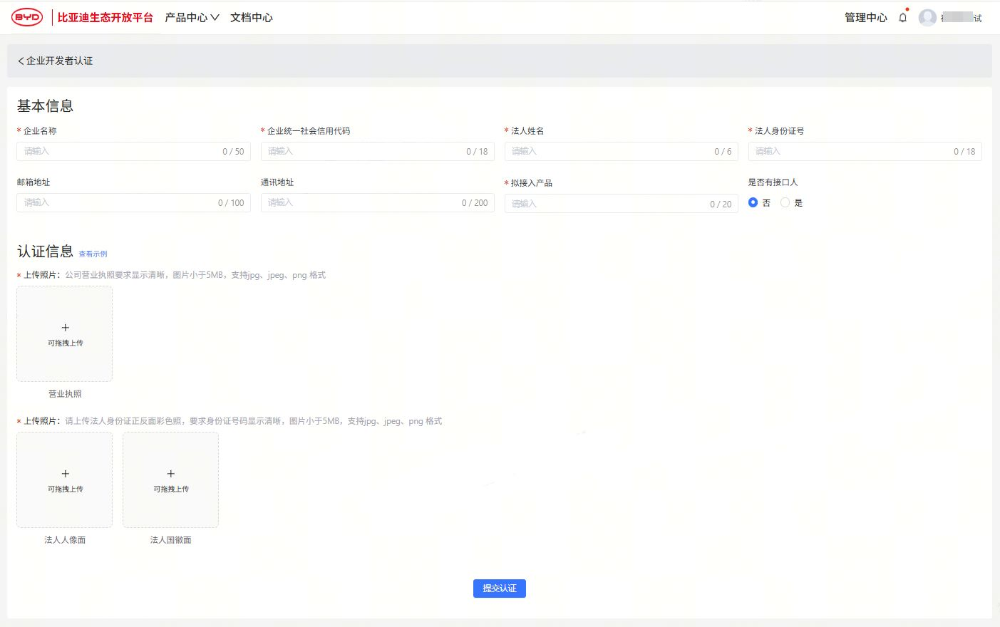
图 4-6 企业认证信息
企业信息填写注意事项：
1）请确保企业名称、企业统一社会信用代码、法人姓名与营业执照证件上的信息保持一致，否则将信息比对不成功；
2）各项信息注意事项如下：
| 序号 | 字段 | 注意事项 |
|---|---|---|
| 1 | 企业名称 | 企业名称与营业执照内一致 |
| 2 | 法人姓名 | 法人姓名与身份证人像面、营业执照证件上的信息保持一致一致 |
| 3 | 法人身份证号 | 法人身份证号与身份证人像面、营业执照证件上的信息保持一致 |
| 4 | 通讯地址 | 位置信息需明确位置，不可仅精确至区/市 |
| 5 | 企业统一社会信用代码 | 与营业执照证件上的信息保持一致 |
| 6 | 营业执照 | 需使用原件，非复印件，另营业执照侧图片清晰可见 |
| 7 | 法人人像面 | 照片应保证各项信息清晰可见，如：身份证姓名、性别、民族、出生年月、地址、身份证号码、头像，营业执照证件上的信息保持一致 |
| 8 | 法人国徽面 | 国徽面清晰可见且身份证证件在有效期范围内，营业执照证件上的信息保持一致 |
表 4-2 企业认证信息注意事项
3）请确保企业经营状态在国家企业信用信息公示系统无异常，否则将无法认证。
4.1.5 认证提交及审核
点击提交后，平台将在1-3个工作日内完成平台审核，若审核不通过/通过，将以短信/站内信方式通知开发者。
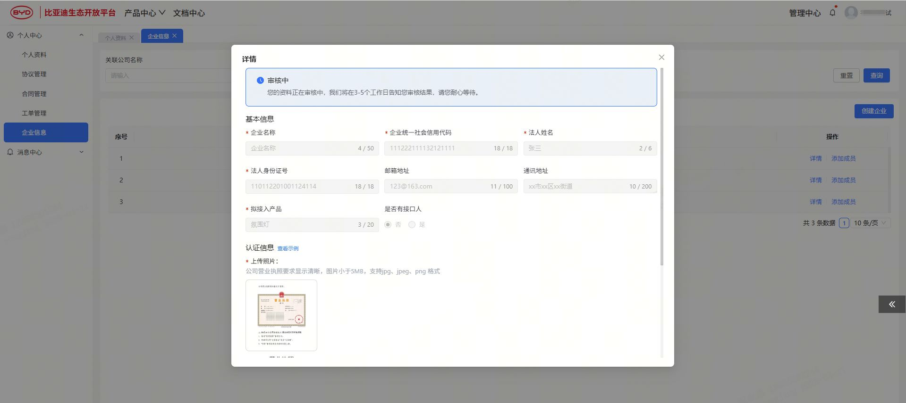
图 4-7 企业认证审核中
4.1.6 切换为企业身份
当平台审核通过后，开发者需要在【个人中心-个人资料】页面切换个人身份到企业身份，如下图 4-8，即可开展具体企业业务。
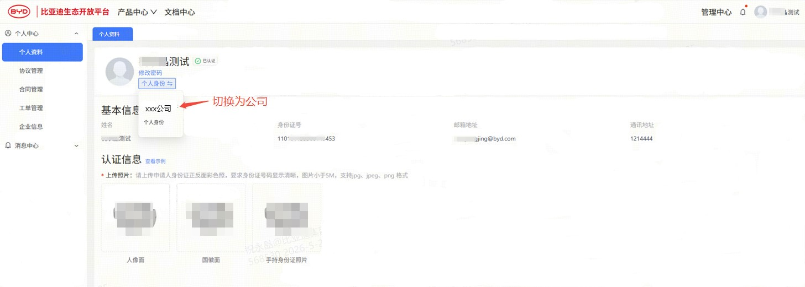
图 4-8 个人身份切换企业身份
4.2 个人开发者认证
4.2.1 认证入口
初次登录会提示您进行认证，点击立即认证或进入右上角【管理中心】入口。
4.2.2 选择认证类型
选择认证类型为「个人开发者认证」。
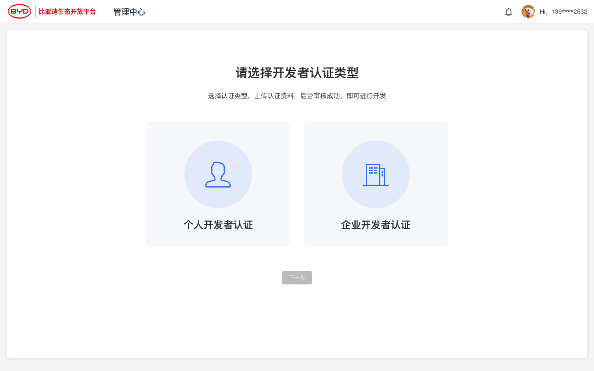
图 4-9 选择开发者认证类型
4.2.3 提交个人认证信息
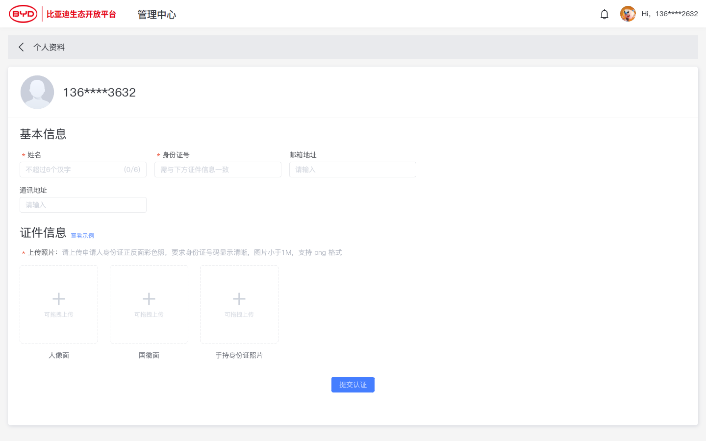
图 4-10 个人认证信息
个人认证信息填写注意事项：
1）请确保姓名、身份证号与身份证证件上的信息保持一致，否则将信息比对不成功，将驳回；
2）各项信息注意事项如下：
| 序号 | 字段 | 校验内容/说明 |
|---|---|---|
| 1 | 姓名 | 姓名与身份证人像面一致 |
| 2 | 身份证号 | 身份证号与身份证人像面一致 |
| 3 | 人像面照片 | 照片应保证各项信息清晰可见，如：身份证姓名、性别、民族、出生年月、地址、身份证号码、头像 |
| 4 | 国徽面照片 | 国徽面清晰可见且身份证证件在有效期范围内 |
| 5 | 手持身份证照片 | 应为本人手持证件拍照 |
表 4-3 个人认证信息注意事项
4.2.4 认证成功
信息填完毕并提交审核，若审核通过将通过短信及站内信形式通知，审核时间为1-3个工作日，请您耐心等待。
4.2.5 认证成功通过
当平台审核通过后，开发者可开展具体业务。
5. 常见问题与注意事项
5.1 企业认证需要先完成个人实名认证？
A：是的。因为企业认证需要提交企业的详细信息和资料，进行企业认证的开发者也是该企业在生态开放平台的创建者，当企业认证成功，该创建者即默认成为该企业在生态开放平台的超级管理员，对该企业有最高的操作权限，可以添加成员到该企业，并分配其他成员角色（包括管理员和普通成员），所以需要先完成企业创建者的个人实名认证。
5.2 企业管理员如何为添加成员？
A：企业管理员登录开放平台后，进入【个人中心-企业信息】，在对应的企业所在行，点击“添加成员”按钮，即可为该企业添加成员，并为该成员分配角色和添加备注名称，如下图5-1，关于企业开发者角色可参考本文档 4.1.1 章节。
注意：被添加的企业成员需要先在比亚迪生态开放平台完成个人实名认证，个人认证参考4.2章节。企业成员被企业管理员添加成功后，登录开放平台后需要先切换身份为企业身份，参考4.1.6章节。
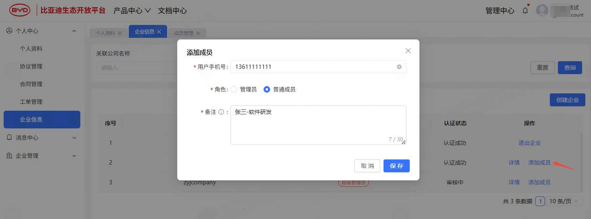
图 5-1 为企业添加成员
5.3 企业身份和个人身份有什么不同？
A：本平台支持个人身份和企业身份切换。
- 如切换到个人身份，后续产品提交、版本更新、收益结算等所有操作，都将自动归属到个人；
- 如切换到企业身份，后续产品提交、版本更新、收益结算等所有操作，都将自动归属到企业。本平台入驻的企业支持多成员管理企业事项，如产品提交等。企业成员角色分为：超级管理员、管理员、普通成员。关于企业开发者角色可参考本文档 4.1.1 章节。
5.4 已经通过企业认证是否自动切换为企业身份？
A：不会。平台会自动记忆您上次登录使用的身份（个人 / xxx企业）。下次进入时，默认沿用上次的身份状态，无需重复切换。 当收到短信或站内信通知“通过了企业认证”，登录平台并切换为对应的企业身份后，后续操作才能归属为该企业行为，身份切换路径【个人中心-个人资料】，具体可参考本文档 4.1.6 章节。